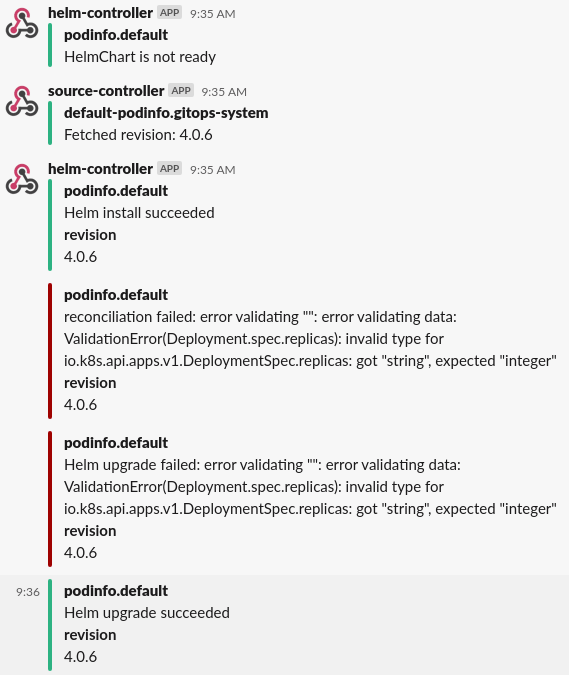

Manage Helm Releases¶
The helm-controller allows you to
declaratively manage Helm chart releases with Kubernetes manifests.
It makes use of the artifacts produced by the
source-controller from
HelmRepository, GitRepository, Bucket and HelmChart resources.
The helm-controller is part of the default toolkit installation.
Prerequisites¶
To follow this guide you'll need a Kubernetes cluster with the GitOps toolkit controllers installed on it. Please see the get started guide or the installation guide.
Define a chart source¶
To be able to release a Helm chart, the source that contains the chart
(either a HelmRepository, GitRepository, or Bucket) has to be known
first to the source-controller, so that the HelmRelease can reference
to it.
Helm repository¶
Helm repositories are the recommended source to retrieve Helm charts from, as they are lightweight in processing and make it possible to configure a semantic version selector for the chart version that should be released.
They can be declared by creating a HelmRepository resource, the
source-controller will fetch the Helm repository index for this
resource on an interval and expose it as an artifact:
apiVersion: source.toolkit.fluxcd.io/v1beta1
kind: HelmRepository
metadata:
name: podinfo
namespace: flux-system
spec:
interval: 1m
url: https://stefanprodan.github.io/podinfo
The interval defines at which interval the Helm repository index
is fetched, and should be at least 1m. Setting this to a higher
value means newer chart versions will be detected at a slower pace,
a push-based fetch can be introduced using webhook receivers
The url can be any HTTP/S Helm repository URL.
Authentication
HTTP/S basic and TLS authentication can be configured for private
Helm repositories. See the HelmRepository CRD docs
for more details.
Git repository¶
Charts from Git repositories can be released by declaring a
GitRepository, the source-controller will fetch the contents of the
repository on an interval and expose it as an artifact.
The source-controller can build and expose Helm charts as artifacts
from the contents of the GitRepository artifact (more about this
later on in the guide).
There is one caveat you should be aware of: to make the
source-controller produce a new chart artifact, the version in the
Chart.yaml of the chart must be bumped.
An example GitRepository:
apiVersion: source.toolkit.fluxcd.io/v1beta1
kind: GitRepository
metadata:
name: podinfo
namespace: flux-system
spec:
interval: 1m
url: https://github.com/stefanprodan/podinfo
ref:
branch: master
ignore: |
# exclude all
/*
# include charts directory
!/charts/
The interval defines at which interval the Git repository contents
are fetched, and should be at least 1m. Setting this to a higher
value means newer chart versions will be detected at a slower pace,
a push-based fetch can be introduced using webhook receivers
The url can be any HTTP/S or SSH address (the latter requiring
authentication).
The ref defines the checkout strategy, and is set to follow the
master branch in the above example. For other strategies like
tags or commits, see the GitRepository CRD docs.
The ignore defines file and folder exclusion for the
artifact produced, and follows the .gitignore pattern
format.
The above example only includes the charts directory of the
repository and omits all other files.
Authentication
HTTP/S basic and SSH authentication can be configured for private
Git repositories. See the GitRepository CRD docs
for more details.
Cloud Storage¶
It is inadvisable while still possible to use a Bucket as a source for a HelmRelease,
as the whole storage bucket will be downloaded by source controller at each sync. The
bucket can easily become very large if there are frequent releases of multiple charts
that are stored in the same bucket.
A better option is to use Chartmuseum and run a cluster local Helm repository that can be used by source controller. Chartmuseum has support for multiple different cloud storage solutions such as S3, GCS, and Azure Blob Storage, meaning that you are not limited to only using storage providers that support the S3 protocol.
You can deploy a Chartmuseum instance with a HelmRelease that exposes a Helm repository stored
in a S3 bucket. Please refer to Chartmuseums how to run documentation
for details about how to use other storage backends.
apiVersion: source.toolkit.fluxcd.io/v1beta1
kind: HelmRepository
metadata:
name: chartmuseum
namespace: flux-system
spec:
url: https://chartmuseum.github.io/charts
interval: 10m
---
apiVersion: helm.toolkit.fluxcd.io/v2beta1
kind: HelmRelease
metadata:
name: chartmuseum
namespace: flux-system
spec:
interval: 5m
chart:
spec:
chart: chartmuseum
version: "2.14.2"
sourceRef:
kind: HelmRepository
name: chartmuseum
namespace: flux-system
interval: 1m
values:
env:
open:
AWS_SDK_LOAD_CONFIG: true
STORAGE: amazon
STORAGE_AMAZON_BUCKET: "bucket-name"
STORAGE_AMAZON_PREFIX: ""
STORAGE_AMAZON_REGION: "region-name"
serviceAccount:
create: true
annotations:
eks.amazonaws.com/role-arn: "role-arn"
securityContext:
enabled: true
fsGroup: 65534
After Chartmuseum is up and running it should be possible to use the accompanying
service as the url for the HelmRepository.
apiVersion: source.toolkit.fluxcd.io/v1beta1
kind: HelmRepository
metadata:
name: helm-charts
namespace: flux-system
spec:
interval: 1m
url: http://chartmuseum-chartmuseum:8080
Define a Helm release¶
With the chart source created, define a new HelmRelease to release
the Helm chart:
apiVersion: helm.toolkit.fluxcd.io/v2beta1
kind: HelmRelease
metadata:
name: podinfo
namespace: default
spec:
interval: 5m
chart:
spec:
chart: <name|path>
version: '4.0.x'
sourceRef:
kind: <HelmRepository|GitRepository|Bucket>
name: podinfo
namespace: flux-system
interval: 1m
values:
replicaCount: 2
The chart.spec values are used by the helm-controller as a template
to create a new HelmChart resource in the same namespace as the
sourceRef. The source-controller will then lookup the chart in the
artifact of the referenced source, and either fetch the chart for a
HelmRepository, or build it from a GitRepository or Bucket.
It will then make it available as a HelmChart artifact to be used by
the helm-controller.
The chart.spec.chart can either contain:
- The name of the chart as made available by the
HelmRepository(without any aliases), for example:podinfo - The relative path the chart can be found at in the
GitRepositoryorBucket, for example:./charts/podinfo - The relative path the chart package can be found at in the
GitRepositoryorBucket, for example:./charts/podinfo-1.2.3.tgz
The chart.spec.version can be a fixed semver, or any semver range
(i.e. >=4.0.0 <5.0.0). It is only taken into account for HelmRelease
resources that reference a HelmRepository source.
Advanced configuration
The HelmRelease offers an extensive set of configurable flags
for finer grain control over how Helm actions are performed.
See the HelmRelease CRD docs
for more details.
Refer to values in ConfigMap and Secret resources¶
It is possible to define a list of ConfigMap and Secret resources
from which to take values. The values are merged in the order given,
with the later values overwriting earlier. These values always have a
lower priority than the values inlined in the HelmRelease via the
spec.values parameter.
spec:
valuesFrom:
- kind: ConfigMap
name: prod-env-values
valuesKey: values-prod.yaml
- kind: Secret
name: prod-tls-values
valuesKey: crt
targetPath: tls.crt
The definition of the listed keys is as follows:
kind: Kind of the values referent (ConfigMaporSecret).name: Name of the values referent, in the same namespace as theHelmRelease.valuesKey(Optional): The data key where the values.yaml or a specific value can be found. Defaults tovalues.yamlwhen omitted.targetPath(Optional): The YAML dot notation path at which the value should be merged. When set, thevaluesKeyis expected to be a single flat value. Defaults toNonewhen omitted, which results in the values getting merged at the root.
Note
The targetPath supports the same formatting as you would supply
as an argument to the helm binary using --set [path]=[value].
In addition to this, the referred value can contain the same
value formats (e.g. {a,b,c} for a list).
You can read more about the available formats and limitations in
the Helm documentation.
TargetPath and JSON values
When using TargetPath in combination with a JSON string, the
limitations are the same as while using helm,
and require you to escape the full JSON string (including =, [, ,, .).
Refer to values in ConfigMaps generated with Kustomize¶
It is possible to use Kustomize ConfigMap generator to trigger a Helm release upgrade every time the encoded values change.
First create a kustomizeconfig.yaml for Kustomize to be able to patch
ConfigMaps referenced in HelmRelease manifests:
nameReference:
- kind: ConfigMap
version: v1
fieldSpecs:
- path: spec/valuesFrom/name
kind: HelmRelease
Create a HelmRelease definition that references a ConfigMap:
apiVersion: helm.toolkit.fluxcd.io/v2beta1
kind: HelmRelease
metadata:
name: podinfo
namespace: podinfo
spec:
interval: 5m
releaseName: podinfo
chart:
spec:
chart: podinfo
sourceRef:
kind: HelmRepository
name: podinfo
valuesFrom:
- kind: ConfigMap
name: podinfo-values
Create a kustomization.yaml that generates the ConfigMap using our kustomize config:
apiVersion: kustomize.config.k8s.io/v1beta1
kind: Kustomization
namespace: podinfo
resources:
- namespace.yaml
- repository.yaml
- release.yaml
configMapGenerator:
- name: podinfo-values
files:
- values.yaml=my-values.yaml
configurations:
- kustomizeconfig.yaml
When kustomize-controller reconciles the above manifests, it will generate
a unique name of the ConfigMap every time my-values.yaml content is updated in Git:
apiVersion: helm.toolkit.fluxcd.io/v2beta1
kind: HelmRelease
metadata:
name: podinfo
namespace: podinfo
spec:
valuesFrom:
- kind: ConfigMap
name: podinfo-values-2mh2t8m94h
Note
Stale ConfigMaps, previously generated by Kustomize, will be
removed from the cluster by kustomize-controller if
pruning is enabled.
Refer to values inside the chart¶
It is possible to replace the values.yaml with a different file present inside the Helm chart.
apiVersion: helm.toolkit.fluxcd.io/v2beta1
kind: HelmRelease
metadata:
name: mongodb
namespace: mongodb
spec:
interval: 5m
chart:
spec:
chart: mongodb
sourceRef:
kind: HelmRepository
name: bitnami
valuesFile: values-production.yaml
values:
replicaCount: 5
If the spec.chart.spec.valuesFile doesn't exists inside the chart, helm-controller will not be able to
fetch the chart. To determine why the HelmChart fails to produce an artifact, you can inspect the status with:
$ kubectl get helmcharts --all-namespaces
NAME READY STATUS
mongodb False failed to locate override values file: values-prod.yaml
Configure notifications¶
The default toolkit installation configures the helm-controller to broadcast events to the notification-controller.
To receive the events as notifications, a Provider needs to be setup
first as described in the notifications guide.
Once you have set up the Provider, create a new Alert resource in
the flux-system to start receiving notifications about the Helm
release:
apiVersion: notification.toolkit.fluxcd.io/v1beta1
kind: Alert
metadata:
generation: 2
name: helm-podinfo
namespace: flux-system
spec:
providerRef:
name: slack
eventSeverity: info
eventSources:
- kind: HelmRepository
name: podinfo
- kind: HelmChart
name: default-podinfo
- kind: HelmRelease
name: podinfo
namespace: default

Configure webhook receivers¶
When using semver ranges for Helm releases, you may want to trigger an update as soon as a new chart version is published to your Helm repository. In order to notify source-controller about a chart update, you can setup webhook receivers.
First generate a random string and create a secret with a token field:
TOKEN=$(head -c 12 /dev/urandom | shasum | cut -d ' ' -f1)
echo $TOKEN
kubectl -n flux-system create secret generic webhook-token \
--from-literal=token=$TOKEN
When using Harbor as your Helm repository, you can define a receiver with:
apiVersion: notification.toolkit.fluxcd.io/v1beta1
kind: Receiver
metadata:
name: helm-podinfo
namespace: flux-system
spec:
type: harbor
secretRef:
name: webhook-token
resources:
- kind: HelmRepository
name: podinfo
The notification-controller generates a unique URL using the provided token and the receiver name/namespace.
Find the URL with:
$ kubectl -n flux-system get receiver/helm-podinfo
NAME READY STATUS
helm-podinfo True Receiver initialised with URL: /hook/bed6d00b5555b1603e1f59b94d7fdbca58089cb5663633fb83f2815dc626d92b
Log in to the Harbor interface, go to Projects, select a project, and select Webhooks. Fill the form with:
- Endpoint URL: compose the address using the receiver LB and the generated URL
http://<LoadBalancerAddress>/<ReceiverURL> - Auth Header: use the
tokenstring
With the above settings, when you upload a chart, the following happens:
- Harbor sends the chart push event to the receiver address
- Notification controller validates the authenticity of the payload using the auth header
- Source controller is notified about the changes
- Source controller pulls the changes into the cluster and updates the
HelmChartversion - Helm controller is notified about the version change and upgrades the release
Note
Besides Harbor, you can define receivers for GitHub, GitLab, Bitbucket and any other system that supports webhooks e.g. Jenkins, CircleCI, etc. See the Receiver CRD docs for more details.